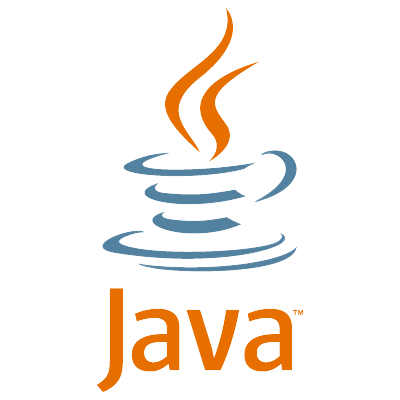
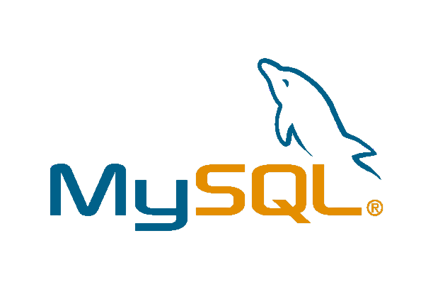
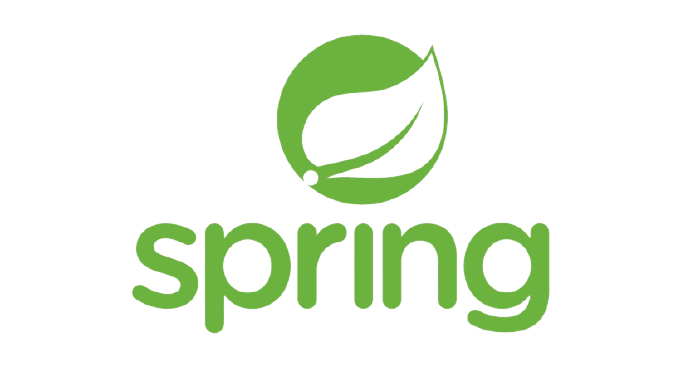
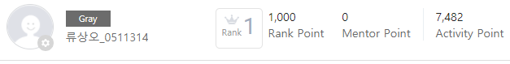
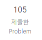
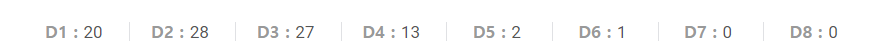
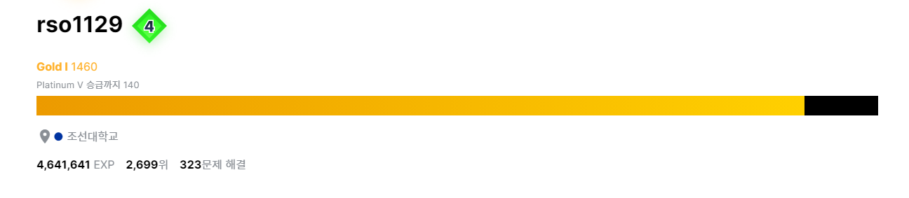
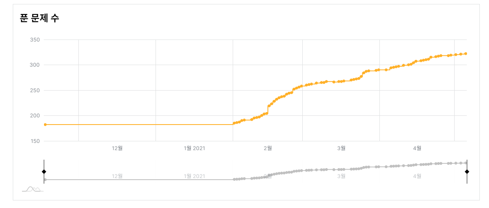
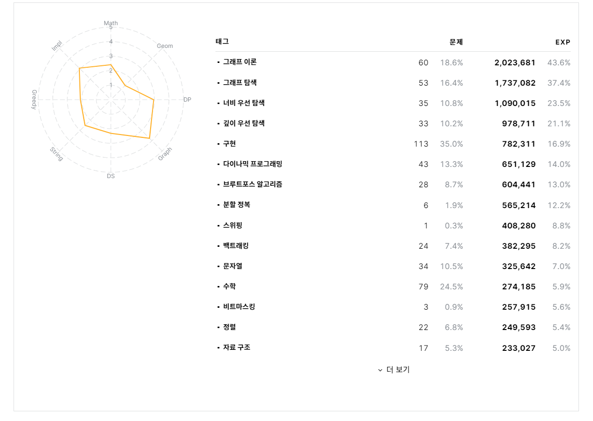

Responsibility
안녕하세요 Backend개발자로 취업을 준비중인 26살 류상오입니다.
저는 현재삼성 청년 소프트웨어 아카데미에서 교육을 받고있습니다.
제 자신에게 중요한 단어라고 하면 책임감입니다. 저는 어떤 일이든 책임감을 가지고 일을 성공적으로 마치기위해 열과 성을 다하는 사람입니다.
STACK
| 기술명 | 로고 | 자체평가 |
|---|---|---|
| JAVA |  | 기본적인 OOP구조, 싱글톤 구현과 더불어 알고리즘 문제들을 풀 수 있습니다 |
| JAVASCRIPT |

|
기본적인 자바스크립트 동작을 구현할 수 있습니다. |
| JQUERY | 기본적인 jquery 작동과 더불어서 ajax도 다룰 수 있습니다. | |
| CSS |

|
웹페이지를 구성하는 기본적인 css요소들을 다룰 수 있습니다. |
| MYSQL |  | DML, DCL, TCL, DDL을 다를수 있으며 윈도우함수도 다룰수있습니다. |
| MARIADB | DML, DCL, TCL, DDL을 다를수 있으며 윈도우함수도 다룰수있습니다. | |
| SPRING |  | 스프링의 구조를 숙지하고있으며 프로젝트 경험이 있습니다. |
| SPRINGBOOT | 스프링 레거시처럼 구현이가능하며 vue와같은 프론트 부분과 연동한 백엔드 서버로 만들수있습니다. | |
| VUE |

|
프론트엔드 부분으로서 웹페이지 제작이 가능합니다. |
| AWS |

|
프론트, 백엔드 배포및 데이터베이스 구축 해봤습니다. |
CERTIFICATE
| 자격증명 | 급수 | 취득처 | 취득일 |
|---|---|---|---|
| 정보처리기사 | 기사 | 한국산업인력공단 | 2020-08-28 |
| SQL-D | 개발자 | 데이터산업진흥원 | 2020-12-29 |
| 한국사능력검정시험 | 1급 | 국사편찬위원회 | 2019-06-07 |
| 자동차운전면허증 | 1종보통 | 전남지방경찰청 | 2015-01-26 |
PROJECT
| 프로젝트 | 소개 | 완성도 | 자세히 |
|---|---|---|---|
| 요리조리 |
요리 레시피 SNS #SpringBoot #Mysql #Vuejs #Aws #Firebase #Mariadb |
100% | |
| 웹채팅 |
자바 웹소켓을 이용한 채팅 프로그램 #SpringBoot #Mysql #Socket |
100% | |
| 2021 자가 소비분석 |
올한해 지금까지의 금전 소비를 분석 및 통계작성 #SpringBoot #Mysql #Billboard js |
100% | |
| HousPlanet |
아파트매매 정보와 리뷰를 보여주는 웹사이트 #SpringBoot #Vue.js #Mysql #Googlemap #Chart.js |
100% | |
| 코로나복합디스펜서 |
열체크 데이터를 기반으로 검사현황 및 기타 정보를 보여주는 웹사이트 #Spring #Arduino #Maridb #Navermap |
100% | |
| LOL선수분석 |
LOL선수 중 Faker선수의 역대 대회기록들의 통계및 분석 #Pandas #Pyqt |
100% | |
| Bang!! |
TCP 멀티스레드 통신을 통한 4인용 보드게임 #Javaswing #Tcp/ip |
80% | |
| 지문대조 |
지문이미지 두개를 비교하여 유사도를 확인 #Opencv #Mfc |
100% | |
| 아르바이트관리 |
아르바이트생의 급여,근무일수등 기본정보를 관리 #Php #Mysql |
90% | |
| 식물타이머 |
식물 물주기 타아머 및 꽃말 사전 #Androidstudio |
70% |
ALGORITHM






EDUCATION
삼성청년 소프트웨어 아카데미 5기
조선대학교 정보통신공학부
광주 대동고등학교
LINK
| 사이트명 | 주소 |
|---|---|
| github | https://github.com/kapop1324 |